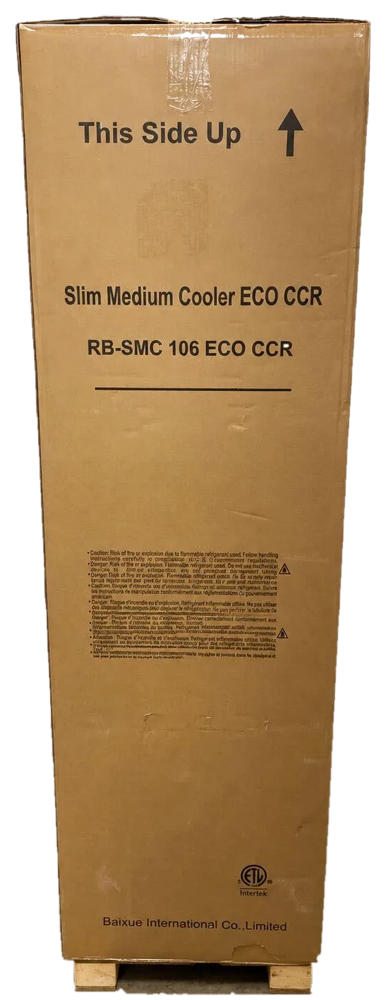
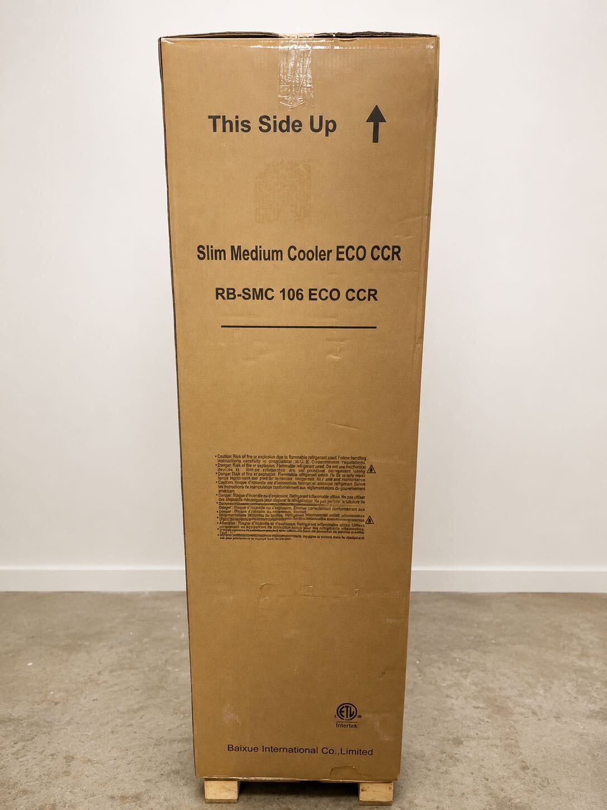
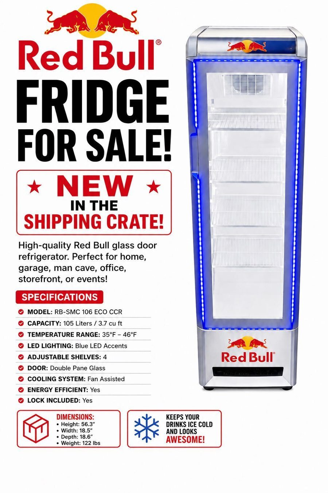

◇
Brand-new & unused
Still in original shipping crate. Never opened.
Brand-new Red Bull commercial cooler — not another used display fridge.
This is the RB-SMC 106 ECO CCR, a 105 liter / 3.7 cu ft mini fridge, still in its original shipping crate and never opened. New units are generally obtained through commercial agreements rather than ordinary consumer retail.
$1,800 OBO ✨🎄 The perfect Christmas gift for men, man caves & game rooms 🎁

It's not just a fridge — it's a limited-access flex.
Still in original shipping crate. Never opened.
New units are generally obtained through commercial relationships.
3.7 cubic feet of listed capacity.
A statement piece for a home, office, or event space.
An unused, unopened unit—not a used-market cooler.
Red Bull fridge under the tree? Christmas has peaked. Nothing will ever top it.
Boyfriend, husband, brother, roommate. The Christmas gift for men that ends the gift search forever.
Dad's garage fridge is from 1994. Give him a Red Bull fridge and watch him tell every neighbor.
The ultimate gamer gift. Red Bull mini fridge beside the setup equals unmatched aura.
Every man cave needs a Red Bull bar fridge. This is non-negotiable.
He does not have this. Nobody has this. It is still in the crate.
Brings a Red Bull fridge to white elephant. Wins Christmas. Is never invited back.
Looking for a Christmas gift for him in Pittsburgh? A man cave gift, a game room gift, a gift for the gamer who already owns every console? A brand-new Red Bull mini fridge in its unopened shipping crate is the Christmas gift for men that no one else will think of, because no one else can get one. Local pickup in Bethel Park (Pittsburgh South Hills) before the holidays. Bow not included.


One Red Bull mini fridge. Infinite chill possibilities.
Home bar, basement bar, wet bar. The Red Bull bar fridge your bar cart has been missing.
Gaming setup, streaming room, LAN party. Energy drinks within arm's reach.
Steelers Sundays deserve a Red Bull fridge in the man cave or she shed.
Workshop, garage gym, or home gym beverage cooler.
Break room, startup office, studio, or waiting room drink fridge.
Parties, tailgates (with power), pop-ups, and brand activations.
Whatever you typed into Google to get here, this is that fridge.
Searching "Red Bull fridge near me" from anywhere in the 412 or the 724? Your search is over.
This Red Bull fridge is for sale with local pickup in Bethel Park, PA, in the South Hills of Pittsburgh. That is right next door to Mt. Lebanon, Upper St. Clair, South Park, Library, Castle Shannon, Baldwin, Whitehall, Pleasant Hills, Peters Township, McMurray, Canonsburg, Bridgeville, and Dormont, and an easy drive from Brookline, Mt. Washington, the South Side, Downtown, Oakland, Squirrel Hill, Shadyside, Lawrenceville, Bloomfield, the Strip District, the North Side, East Liberty, Robinson, Moon Township, Cranberry Township, Wexford, the North Hills, Monroeville, McKeesport, Allegheny County, Washington County, and the rest of Western PA. If you have been hunting for a mini fridge, bar fridge, or beverage cooler for sale in Pittsburgh, bring a vehicle that fits a tall crate and a friend to help lift it.
The asking price reflects the brand-new, unopened-in-its-shipping-crate condition and the limited ordinary retail availability of new commercial units. Used examples are not a like-for-like comparison. Offers are welcome.
The seller understands that new Red Bull commercial coolers are generally obtained through commercial agreements rather than ordinary consumer retail. Availability and program terms should be confirmed directly with Red Bull.
It means new units are not generally sold like ordinary consumer appliances. This listing is an independent private sale; it is not an offer of, or affiliation with, any Red Bull commercial program.
Yes. The unit is described as new in its original shipping crate and never opened. It has not been unpacked or used.
Because the refrigerator is still sealed in its shipping crate. The crate photograph is the actual item photo. The separate promotional graphic is AI-generated artwork, not a photograph of this specific unit.
RB-SMC 106 ECO CCR.
105 liters / 3.7 cubic feet.
No. It has never been unpacked or tested by the seller. The listing represents its new, unopened condition; it does not claim that the unit has been tested or demonstrated working.
Local pickup in Bethel Park, PA, in the South Hills of Pittsburgh.
The listing is for local pickup in Bethel Park, PA, just south of Pittsburgh. Shipping has not been offered or priced.
The refrigerator remains in its shipping crate. Inspecting the refrigerator itself would require opening the crate, so please discuss inspection expectations before arranging pickup.
The asking price is $1,800 OBO. Reasonable offers are welcome.
No. This is an independent private sale and is not affiliated with or endorsed by Red Bull.
Email redbull@castlelogic.dev with your offer and any questions about local pickup.
For most people, yes. A Red Bull mini fridge is a compact glass door beverage cooler, which is exactly what most people mean by a bar fridge. At 105 liters / 3.7 cu ft it sits between a dorm mini fridge and a full-size beverage merchandiser.
Right here. This Red Bull fridge is for sale with local pickup in Bethel Park, PA, in the South Hills of Pittsburgh. Email redbull@castlelogic.dev to make an offer.
If you are anywhere in the Pittsburgh area, this one is near you. Pickup is in Bethel Park, in the South Hills of Pittsburgh, Pennsylvania.
New Red Bull coolers are generally placed through commercial agreements rather than sold in stores, which is why a new one rarely shows up for sale. This is a private sale of one unopened unit.
Slim Medium Cooler ECO CCR is the name printed on the shipping crate for this model, the RB-SMC 106 ECO CCR. It is a slim, upright Red Bull beverage cooler.
The listed capacity is 105 liters, which is about 3.7 cubic feet. It is a slim upright cooler, not a countertop mini fridge.
That is the dream. It is a beverage cooler built to keep cans cold and look like a Red Bull fridge while doing it. Check the space and power where you plan to put it before pickup.
No. It is brand-new and still sealed in its original shipping crate. Most Red Bull fridges for sale are used ex-store units; this one is not.
No. Just the fridge. Stocking it is up to you.
It is the best Christmas gift for men. Boyfriend, husband, dad, brother, roommate, the guy who says he does not want anything: he wants a Red Bull fridge.
Does he have a brand-new Red Bull fridge still sealed in its shipping crate? He does not. Problem solved.
A Red Bull mini fridge next to the gaming setup is the most powerful gamer gift possible. Cold energy drinks, zero trips to the kitchen, maximum aura.
No. It will not fit in a stocking. It will barely fit in a hatchback. Plan accordingly.
Pickup is local in Bethel Park, in the Pittsburgh South Hills. Email redbull@castlelogic.dev early to set up a time before the holidays.
It would win white elephant forever. It may exceed your office Secret Santa budget.
Bethel Park, in the South Hills. It is close to Mt. Lebanon, Upper St. Clair, South Park, and Route 19, and about 20 to 30 minutes from Downtown Pittsburgh depending on traffic and the tunnels.